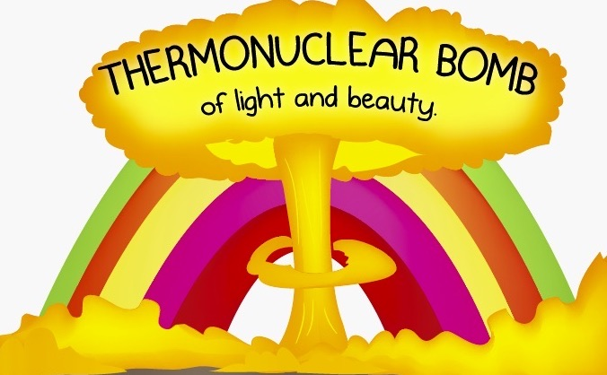

Nome Científio
Odontodactylus scyllarusClassificacão Científio
| Reino | Animalia |
| Filo | Arthropoda |
| Subfilo | Crustacea |
| Classe | Malacostraca |
| Subclasse | Hoplocarida |
| Ordem | Stromatopoda |
O que faz esse animal ser incrível?
Explosão de Cores
Nossos olhos contém milhões de células sensíveis a luz, chamadas cones e bastonetes. Humanos possuem três tipos de cones sensíveis a luz, sendo eles, verde, vermelho e azul. Quando se diz respeito a visão de cores, borboletas estão no topo da cadeia alimentar. Porém, existe outro animal com a visão melhor que a das borboletas: O STOMATOPODA. O Stomatopa, ou Lagosta-Boxeadora, vive em águas rasas e mornas, e, geralmente, cresce para ter entre 15 - 30 cm em comprimento. Essa criatura estupenda não tem dois, não tem três, não tem cinco, mas dezeseis cones sensíveis a cor. O arco-íris que vemos provem apenas de três cores, então tente imaginar um arco-íris de DEZESEIS cores visto pelos olhos de uma Lagosta-Boxeadora. Onde nós vemos um arco-íris, a Lagosta-Boxeadora enxerga uma BOMBA TERMONUCLEAR de luz e beleza.
Super Soco
Apesar de ser uma criatura capaz de perceber tantas cores e beleza, este pequeno crustáceo está longe de ser um agente pacificador. Na realidade, este animal é o terror marinho e uma das criaturas mais violentas do Planeta Terra. Este animal possui dois apêndices raptoriais na parte frontal de seus corpos. Estes aceleram a uma velocidade semelhante a um tiro de um rifle calibre 22 e, em menos de 3 milésimos de segundo, consegue acertar sua presa com 1,500 Newtons de Força. Para colocar em perspectiva, caso humanos fosse capaz de acelerar seus braços em um décimo dessa velocidade, seriamos capazes de jogar uma bola de baisebol em órbita. Seus membros movem tão rápidos que a água em torno destes ferve em um processo chmado de Supercavitação. Quando essas "bolhas de cavitação" colapsam, uma onda de choque subaquática que conseguem matar as presas, mesmo se a Lagosta-Boxeadora errar o alvo. A força produzida por esse colapso de bolhas, também, consegue produzir temperaturas na casa dos milhares de Kelvins e emite pequenas rajadas de luz. Este efeito é chamado de sonoluminescência. Usando esses "membros assassinos", desmembramento é a maneira primária como a Lagosta-Boxeadora mata suas presas. Ela destroi outros animais em pedaços, esmagando carangueijos, polvos, moluscos e ostras até suas "delicías" comecem a sair.
Diga não aos aquários
Tipicamente, aquários não hospedam Lagostas-Boxeadoras, pois elas tendem a massacrar qualquer outra criatura que partilhar de seu hábitat e, também, elas conseguem quebrar os vidros dos aquários.
Estes são alguns dos motivos para a Lagosta-Boxeadora(Stomatopoda) ser um animal extraordinário, pois, na presença de tanta beleza e luz, esta criatura abraça a
ESCURIDÃO
Exala morte com um brilho luminescente morbido de uma Estrela.
É o Genghis Khan encharcada de sorvete.
A Lagosta-Boxeadora é o prenúncio do arco-íris embebido de sangue.
É brilhante.
É sombrio.
E é belo.
Referências bibliográficas